How to Install Maple in Window 10
1. Run the Maple 18 Installer Setup (“Maple18WindowsX64installer.exe”) and Click on “Next” Button.
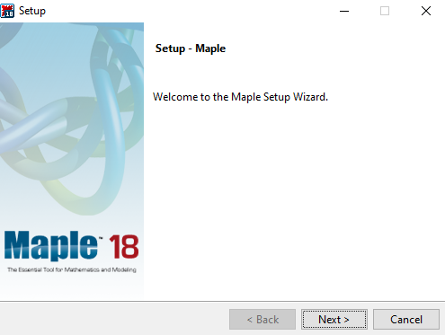
2. Select “I accept the Licence agreement Option” and Click on “Next” Button.
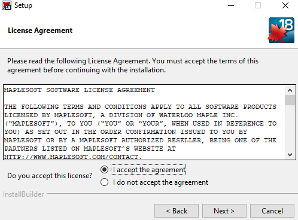
3. Specify the Installation default folder and Click on “Next” button.
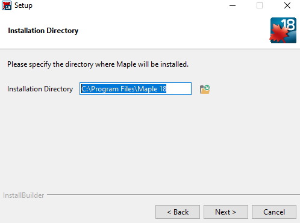
4. Select “Yes” to create Shortcut on desktop and Click on “Next” Button.
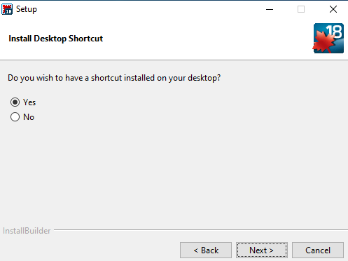
5. Choose the Licensing type as “Network License” and Click “Next Button”.
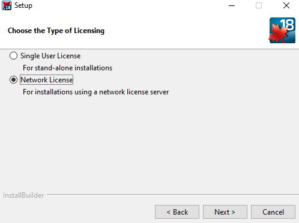
6. Select “Single Server” and Click “Next” Button.
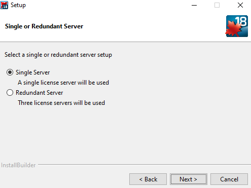
7. Enter the License Server Detail and port Number (License Server is akash2.cc.iitk.ac.in and port number is 25000) and click on “Next” button .
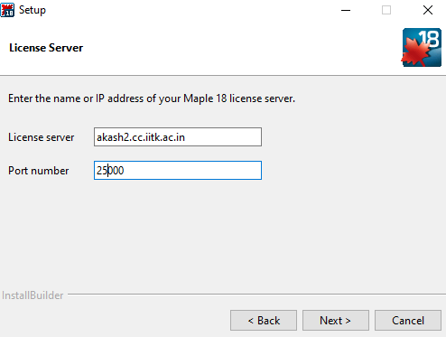
8. Select options if required and Click “Next” button.
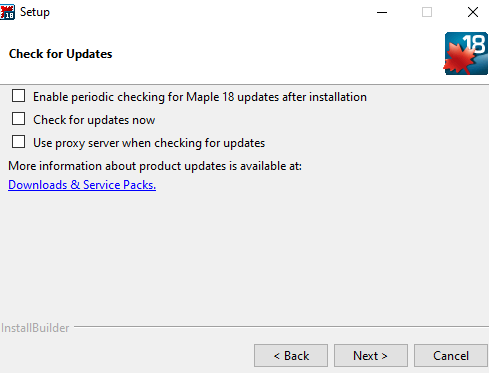
9. Click on “Next” button to continue installation.
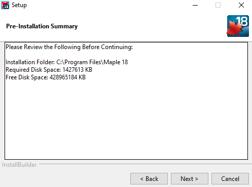
10. Installation Process are Running. Wait several minutes.
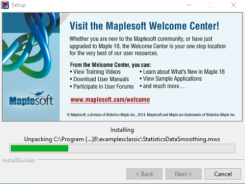
11. Installation Completed then Click “Finish Button” .
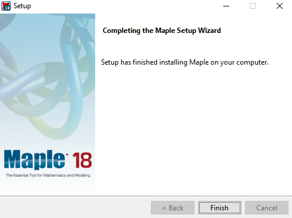
12. Preview Of Maple Software as Below:
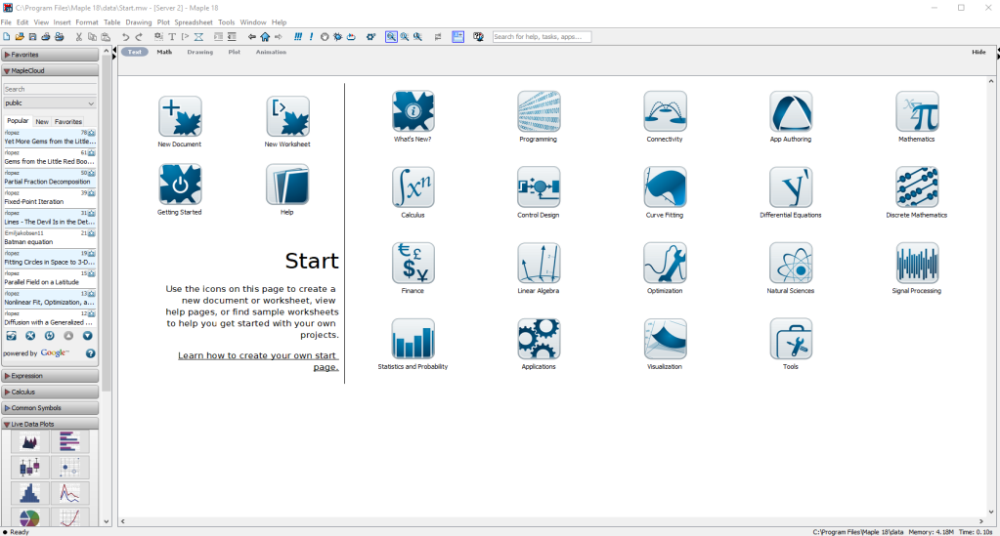